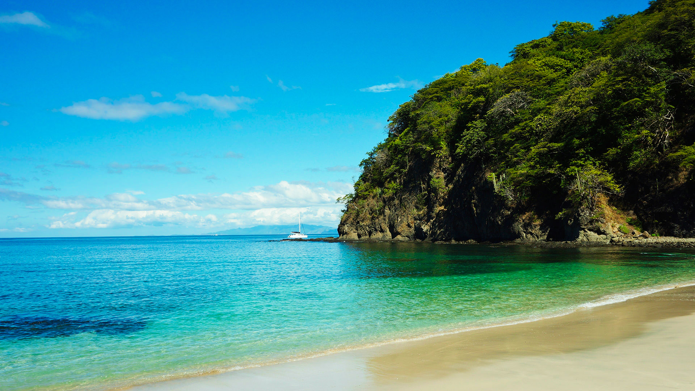
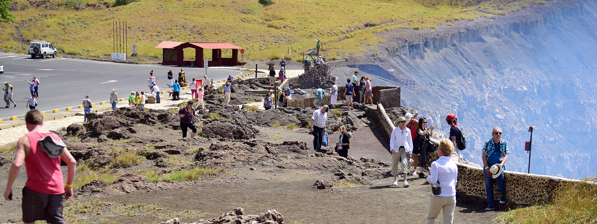
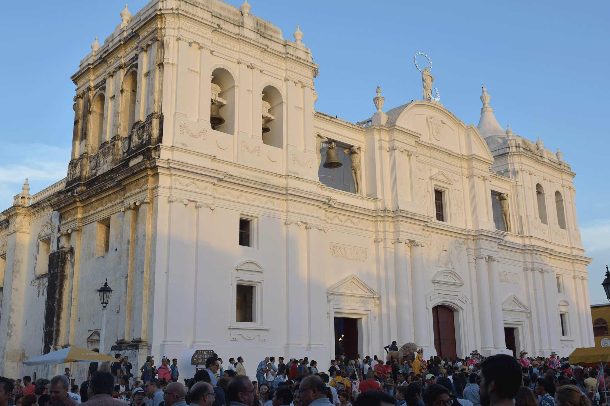
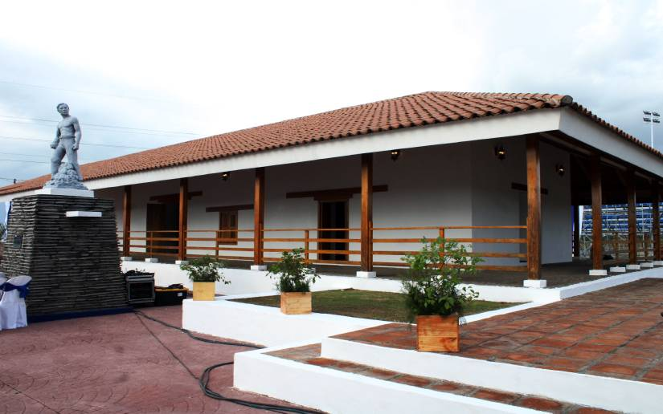
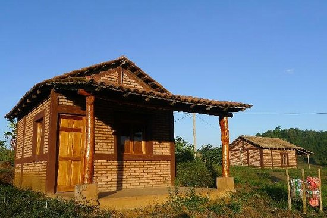

Explora algunos de los paisajes, tradiciones y experiencias que hacen de Nicaragua un destino único.

Playa El Coco es un paraíso escondido al sur de San Juan del Sur.

Los volcanes de Nicaragua son imponentes y majestuosos.

Turistas explorando el impresionante Cañón de Somoto.

León, la Gritería es una de las tradiciones religiosas más importantes.

Las haciendas nicaragüenses reflejan historia y cultura.

Las cabañas en Jinotega, ofrecen un refugio acogedor en medio de montañas verdes y aire fresco, perfectas para descansar, convivir y disfrutar de la naturaleza en familia o con amigos.” 🌲.